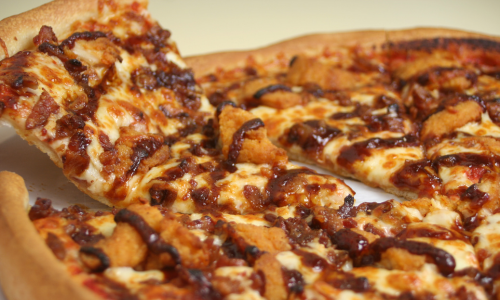

BBQ Chicken Pizza
Homemade BBQ Chicken Pizza made with bbq sauce, mozzarella, chicken,
red onions and cilantro on perfect homemade crust.
Ingredients
- Dough for one large pizza
- 1 1/2 cups cooked chicken (one shredded rotisserie or about 2 chicken breasts)
- 2 cups shredded mozzarella cheese
- 1/2 cup bbq sauce
- 1/4 large red onion very thinly sliced
- Fresh cilantro to taste
Directions
- Preheat your oven to 450 degrees F and prebake your pizza dough for 6
minutes.
- Spread a thin layer of bbq sauce on top of the pre-baked pizza crust.
Then top with a thin layer of mozzarella cheese and sliced red onion.
- Add cooked chicken to a bowl and cover it with a few tablespoons og bbq
sauce. Toss it to combine. Spread chicken over the pizza
- Sprinkle another thin layer of cheese on top of the pizza, and add
chopped cilanto, to taste.
- Bake at 450 F for 10-15 minutes or until crust is golden brown and cheese
is bubbly.
Notes
Make Ahead Instructions: You can prepare bbq chicken pizza up to one day
ahead of time. Follow steps 1-4, then cover well and refrigerate until ready
to bake.